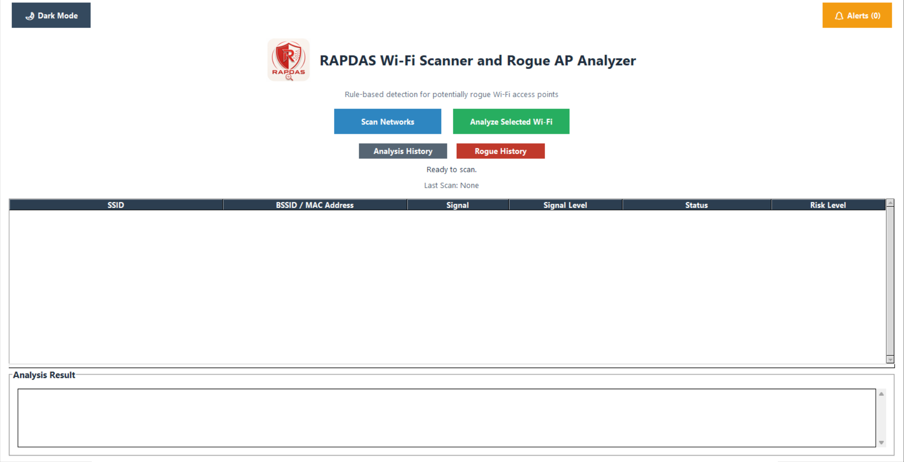
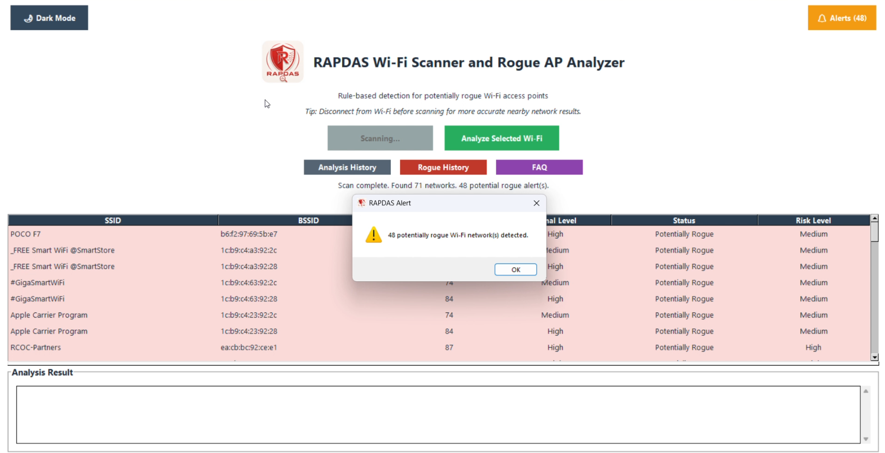
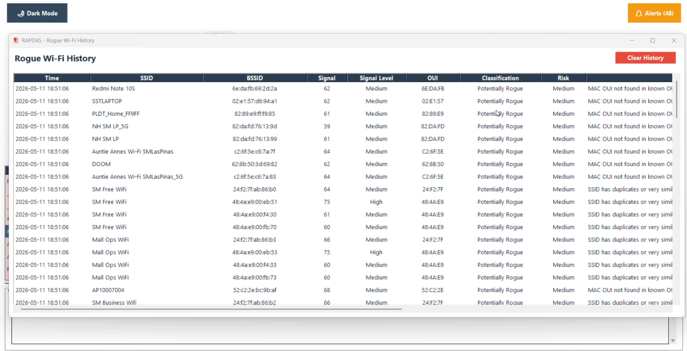

RAPDAS scans nearby Wi-Fi networks and flags potentially rogue access points — so you can connect carefully in public spaces like shopping malls.

A free desktop tool that helps everyday users identify potentially dangerous Wi-Fi networks before connecting — no technical knowledge required.
When you're working at a mall café and your hotspot runs out, you might quickly connect to the nearest free Wi-Fi without thinking twice. This is exactly what attackers count on.
Rogue access points — fake Wi-Fi networks designed to look legitimate — can intercept your data, steal your credentials, and expose your work to malicious actors.
RAPDAS was built specifically for this scenario. It scans all nearby Wi-Fi networks and applies a rule-based system to flag networks that show signs of being potentially rogue, giving you the awareness to make safer choices.
Developed as a capstone research project studying public Wi-Fi networks in shopping malls across Las Piñas City.
RAPDAS needs Npcap to scan nearby Wi-Fi networks. Follow these steps before running the app.
Npcap allows RAPDAS to detect nearby Wi-Fi networks and analyze them safely.
RAPDAS is designed for non-technical users. Just download, run, and scan.
A clean, readable interface built for users who aren't IT experts.


RAPDAS is completely free. No account, no subscription, no data collection.
RAPDAS was developed as a capstone project by a BS Information Technology student majoring in Cybersecurity at Southville International School and Colleges, focusing on public Wi-Fi security in Las Piñas City.